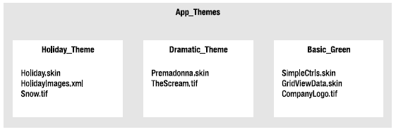
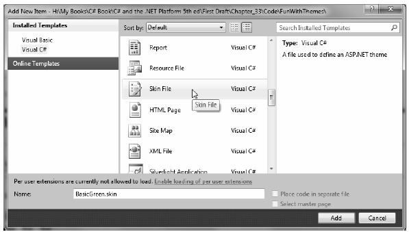
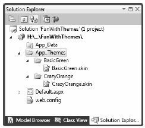
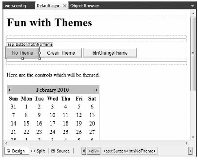

At this point, you have had the chance to work with numerous ASP.NET web controls. As you have seen, each control exposes a set of properties (many of which are inherited by System.Web.UI.WebControls.WebControl) that allow you to establish a given UI look and feel (background color, font size, border style, and whatnot). Of course, on a multipaged website, it is quite common for the site as a whole to define a common look and feel for various types of widgets. For example, all TextBoxes might be configured to support a given font, all Buttons have a custom image, and all Calendars have a light blue border.
Obviously, it would be very labor intensive (and error prone) to establish the same property settings for every widget on every page within your website. Even if you were able to manually update the properties of each UI widget on each page, imagine how painful it would be when you now need to change the background color for each TextBox yet again. Clearly, there must be a better way to apply sitewide UI settings.
One approach to simplifying the application of a common UI look and feel is to define style sheets. If you have a background in web development, you are aware that style sheets define a common set of UIcentric settings that are applied on the browser. As you would hope, ASP.NET web controls can be assigned a given style by assigning the CssStyle property.
However, ASP.NET ships with a complementary technology to define a common UI termed themes. Unlike a style sheet, themes are applied on the web server (rather than the browser) and can be done so programmatically or declaratively. Given that a theme is applied on the web server, it has access to all the server-side resources on the website. Furthermore, themes are defined by authoring the same markup you would find within any *.aspx file (as you may agree, the syntax of a style sheet is a bit on the terse side).
Recall from Chapter 32 that ASP.NET web applications may define any number of special subdirectories, one of which is App_Themes. This single subdirectory may be further partitioned with additional subdirectories, each of which represents a possible theme on your site. For example, consider Figure 33-22, which illustrates a single App_Themes folder containing three subdirectories, each of which has a set of files that make up the theme itself.
Figure 33-22 A single App_Theme folder may define numerous themes
The one file that every theme subdirectory is sure to have is a *.skin file. These files define the look and feel for various web controls. To illustrate, create a new website named FunWithThemes. Next, insert a new *.skin file (using the Website > Add New Item menu option) named BasicGreen.skin, as shown in Figure 33-23.
Figure 33-23 Inserting *.skin files
Visual Studio 2010 will prompt you to confirm this file can be added into an App_Themes folder (which is exactly what we want). If you were now to look in your Solution Explorer, you would indeed find your App_Themes folder has a subfolder named BasicGreen containing your new BasicGreen.skin file.
A *.skin file is where you are able to define the look and feel for various widgets using ASP.NET control declaration syntax. Sadly, the IDE does not provide designer support for *.skin files. One way to reduce the amount of typing time is to insert a temporary *.aspx file into your program (temp.aspx, for example) that can be used to build up the UI of the widgets using the Visual Studio 2010 page designer.
The resulting markup can then be copied and pasted into your *.skin file. When you do so, however, you must delete the ID attribute for each web control! This should make sense, given that we are not trying to define a UI look and feel for a particular Button (for example) but all Buttons.
This being said, here is the markup for BasicGreen.skin that defines a default look and feel for the Button, TextBox, and Calendar types:
<asp:Button runat="server" BackColor="#80FF80"/> <asp:TextBox runat="server" BackColor="#80FF80"/> <asp:Calendar runat="server" BackColor="#80FF80"/>
Notice that each widget still has the runat="server" attribute (which is mandatory), and none of the widgets have been assigned an ID attribute.
Now, let’s define a second theme named CrazyOrange. Using the Solution Explorer, right-click your App_Themes folder and add a new theme named CrazyOrange. This will create a new subdirectory under your site’s App_Themes folder.
Next, right-click the new CrazyOrange folder within the Solution Explorer and select Add New Item. From the resulting dialog box, add a new *.skin file. Update the CrazyOrange.skin file to define a unique UI look and feel for the same web controls. For example:
<asp:Button runat="server" BackColor="#FF8000"/> <asp:TextBox runat="server" BackColor="#FF8000"/> <asp:Calendar BackColor="White" BorderColor="Black" BorderStyle="Solid" CellSpacing="1" Font-Names="Verdana" Font-Size="9pt" ForeColor="Black" Height="250px" NextPrevFormat="ShortMonth" Width="330px" runat="server"> <SelectedDayStyle BackColor="#333399" ForeColor="White" /> <OtherMonthDayStyle ForeColor="#999999" /> <TodayDayStyle BackColor="#999999" ForeColor="White" /> <DayStyle BackColor="#CCCCCC" /> <NextPrevStyle Font-Bold="True" Font-Size="8pt" ForeColor="White" /> <DayHeaderStyle Font-Bold="True" Font-Size="8pt" ForeColor="#333333" Height="8pt" /> <TitleStyle BackColor="#333399" BorderStyle="Solid" Font-Bold="True" Font-Size="12pt" ForeColor="White" Height="12pt" /> </asp:Calendar>
At this point, your Solution Explorer should like Figure 33-24.
Figure 33-24 A single website with multiple themes
Now that your site has a few themes defined, the next logical question is how to apply them to your pages? As you might guess, there are many ways to do so.
Note To be sure, these example themes are quite bland by design (in order to reduce the amount of markup on the printed page). Feel free to spruce things up to your liking.
If you wish to make sure that every page in your site adheres to the same theme, the simplest way to do so is to update your web.config file. Open your current web.config file and define a <pages> element within the scope of your <system.web> root element. If you add a theme attribute to the <pages> element, this will ensure that every page in your website is assigned the selected theme (which is, of course, the name of one of the subdirectories under App_Theme). Here is the core update:
<configuration> <system.web> ... <pages theme="BasicGreen"> </pages> </system.web> </configuration>
If you were to now place various Buttons, Calendars, and TextBoxes onto your Default.aspx file and run the application, you would find each widget has the UI of BasicGreen. If you were to update the theme attribute to CrazyOrange and run the page again, you would find the UI defined by this theme is used instead.
It is also possible to assign themes on a page-by-page level. This can be helpful in a variety of circumstances. For example, perhaps your web.config file defines a sitewide theme (as described in the previous section); however, you wish to assign a different theme to a specific page. To do so, you can simply update the <%@Page%> directive. If you are using Visual Studio 2010 to do so, you will be happy to find that IntelliSense will display each defined theme within your App_Theme folder.
<%@ Page Language="C#" AutoEventWireup="true"
CodeFile="Default.aspx.cs" Inherits="_Default" Theme ="CrazyOrange" %>
Because you assigned the CrazyOrange theme to this page, but the Web.config file specified the BasicGreen theme, all pages but this page will be rendered using BasicGreen.
Sometimes you wish to define a set of possible UI look and feel scenarios for a single widget. For example, assume you want to define two possible UIs for the Button type within the CrazyOrange theme. When you wish do so, you may differentiate each look and feel using the SkinID property of a control within the *.skin file:
<asp:Button runat="server" BackColor="#FF8000"/> <asp:Button runat="server" SkinID = "BigFontButton" Font-Size="30pt" BackColor="#FF8000"/>
Now, if you have a page that makes use of the CrazyOrange theme, each Button will, by default, be assigned the unnamed Button skin. If you wish to have various buttons within the *.aspx file make use of the BigFontButton skin, simply specify the SkinID property within the markup:
<asp:Button ID="Button2" runat="server" SkinID="BigFontButton" Text="Button" /><br />
Last but not least, it is possible to assign a theme in code. This can be helpful when you wish to provide a way for end users to select a theme for their current session. Of course, we have not yet showed you how to build stateful web applications, so the current theme selection will be forgotten between postbacks. In a production-level site, you may wish to store the user’s current theme selection within a session variable, or persist the theme selection to a database.
To illustrate how to assign a theme programmatically, update the UI of your Default.aspx file with three new Button controls as shown in Figure 33-25. Once you have done so, handle the Click event for each Button type.
Figure 33-25 The updated UI of the themes example
Now be aware that you can only assign a theme programmatically during specific phases of your page’s life cycle. Typically, this will be done within the Page_PreInit event. This being said, update your code file as follows:
partial class _Default : System.Web.UI.Page { protected void btnNoTheme_Click(object sender, System.EventArgs e) { // Empty strings result in no theme being applied. Session["UserTheme"] = ""; // Triggers the PreInit event again. Server.Transfer(Request.FilePath); } protected void btnGreenTheme_Click(object sender, System.EventArgs e) { Session["UserTheme"] = "BasicGreen"; // Triggers the PreInit event again. Server.Transfer(Request.FilePath); } protected void btnOrangeTheme_Click(object sender, System.EventArgs e) { Session["UserTheme"] = "CrazyOrange"; // Triggers the PreInit event again. Server.Transfer(Request.FilePath); } protected void Page_PreInit(object sender, System.EventArgs e) { try { Theme = Session["UserTheme"].ToString(); } catch { Theme = ""; } } }
Notice that we are storing the selected theme within a session variable (see Chapter 33 for details) named UserTheme, which is formally assigned within the Page_PreInit() event handler. Also note that when the user clicks a given Button, we programmatically force the PreInit event to fire by calling Server.Transfer() and requesting the current page once again. If you were to run this page, you would now find that you can establish your theme via various Button clicks.
Source Code The FunWithThemes web site is included under the Chapter 33 subdirectory.